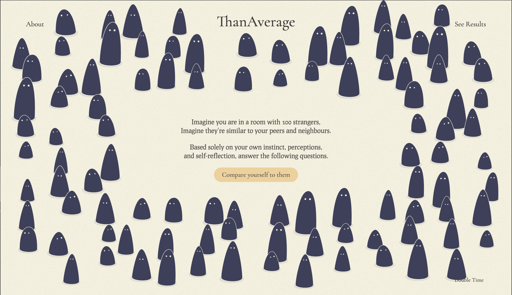
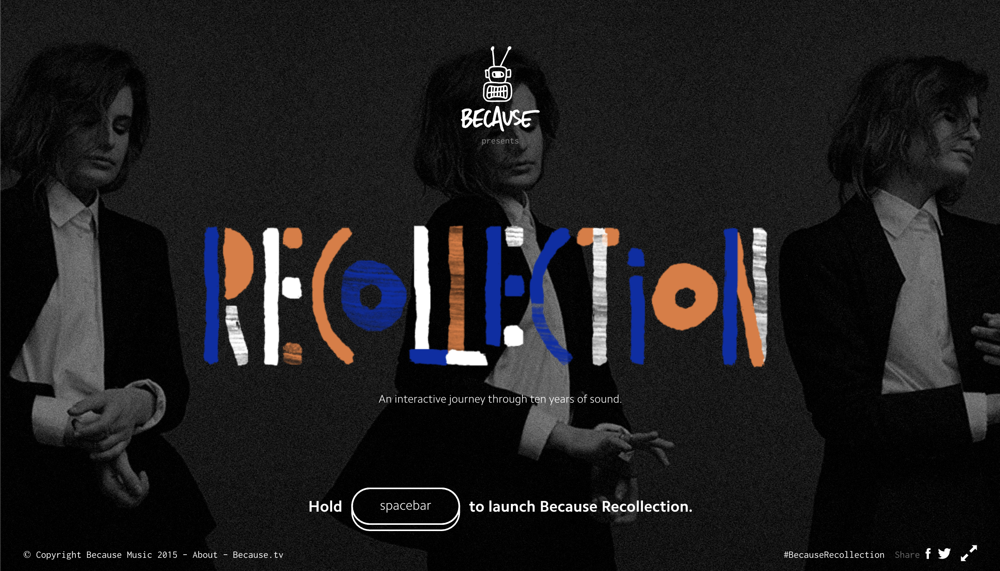

Comparative Analysis
Thursday May 14, 2026

Link to siteThis is a great source of inspiration because it uses an interactive format that closely matches the direction I want to take with my own project. One aspect I found especially effective was how the website gave users perspective by showing responses from previous visitors, which made the experience feel more personal and reflective. The interface design is simple but engaging, allowing the focus to remain on the questions while still including playful interaction elements, such as characters bouncing when hovered over. These small animations improved the overall user experience by making the site feel more dynamic and less overwhelming, encouraging users to continue exploring and interacting with the content.

Link to siteThis website is another strong source of inspiration for my project because it creates a highly interactive and engaging experience for the user. There is always something happening on the page, whether it is subtle background movement or direct interaction in the foreground, which keeps the interface visually interesting and encourages exploration. I especially enjoyed being able to drag elements around and scroll through the site to see how different actions affected the experience. The interaction design makes the website feel playful and immersive rather than static, and I would like to incorporate similar interactive features into my own project so users feel entertained and actively involved while navigating the page.